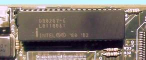

| Сопроцессор — специализированная интегральная микросхема, работающая во взаимодействии с центральным процессором, предназначенная для выполнения математических операций (операций с плавающей точкой). |  |
В компьютерах
с процессором 80286, 80386DX функции сопроцессора выполняла отдельная микросхема
80287, 80387, устанавливаемая в специальное гнездо на материнской плате.
Начиная с 486DX сопроцессор интегрирован на кристалл основного процессора.
Математический
сопроцессор необходим при работе с 3-мерной графикой, издательскими пакетами,
электронными таблицами, пакетами САПР, математическими программами и т.
п. При использовании баз данных или обычных текстовых редакторов, при работе
с сетевыми операционными системами использование сопроцессора не дает ощутимых
результатов. По данным обзоров, только треть владельцев персональных компьютеров
эффективно использует математические сопроцессоры.
Производители
сопроцессоров — Intel, AMD, Cyrix, Weitek.
Сопроцессоры
Cyrix – одни из самых быстрых, полностью совместимы с сопроцессорами Intel.
Сопроцессоры
Weitek имеют ограниченное применение и ориентированы на использование поддерживающего
их программного обеспечения – CADkey, Autodesk, C++ и т. п.